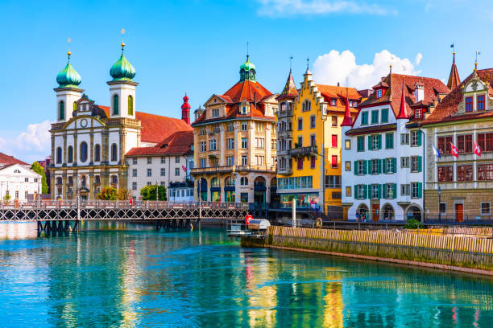

TOURIST SPOTS IN THE ITALY

COLOSSEUM,ROME
This huge amphitheater, the largest of its kind ever built by the Roman Empire and the largest
of their constructions to survive, remained a model for sports facilities right up to modern times.
Built by Vespasian in 72 CE and enlarged by the addition of a fourth story by his son, Titus, the
Colosseum was a venue for public spectacles and shows - even mock sea battles. A wooden floor that
was 83 by 48 meters covered two additional underground stories with tunnels, rooms, cells, and
passages that provided space for gladiators, workers, wild animals, and storage.Today, the structure
stands in stark contrast to the modern development that surrounds it and is a prominent reminder of
ancient times and the extensive history of Rome.

AMALFI COAST
The Amalfi Coast, a UNESCO World Heritage Site, is a stunning stretch of coastline along the
Sorrentine Peninsula, south of Naples and Sorrento. Hillside towns are built precariously along the
steep mountainsides that cascade down to the sea.The main towns along here are Positano and Amalfi,
with its colorfully domed cathedral. You can tour the coast by road, or hop between towns by boat for
different perspectives of the dramatic and almost vertical shore.While walking paths stretch all
along the coast, the most breathtaking scenery for walkers is the Sentiero degli Dei, Footpath of the
Gods, at the western end from Positano. My favorite viewpoint is far above the Amalfi Drive, in the
village of Ravello. Clinging to the steep mountainside in terraces, Ravello was a sizable town in the
13th century and the gardens of its former villas make scenic belvederes for enjoying flower-framed
views of the coast below.

MILAN DUOMO
Milan's magnificent Cathedral of Santa Maria Nascente, "Il Duomo" to the locals, is one of the
world's largest churches and probably the best example anywhere of the flamboyant Gothic style. Its
statue-studded façade (the exterior of the cathedral has a grand total of 2,245 marble statues) and
the 135 carved stone pinnacles that crown its roof make quite a first impression, which is reinforced
as you step inside. Fifty-two immense pillars support the soaring ceiling of the nave, and its walls
are decorated by the world's largest stained-glass windows. Highlights in the nave are the tomb of
Gian Giacomo Medici and a 12th-century bronze candelabrum. Below the high altar is the crypt and the
octagonal chapel with the gold reliquary of San Carlo Borromeo. Under Piazza del Duomo, and reached
by stairs near the entrance, are the foundations of a fourth-century baptistery and basilica.
An elevator will take you partway to the roof, where you can walk at a dizzying height among the
carved stone pinnacles.
TOURIST SPOTS IN SWITZERLAND

THE MATTERHORN
You'll never forget the first time you see Switzerland's most symbolic mountain, the Matterhorn.
Maybe you arrive in the charming village of Zermatt, at its base, on a clear blue day and the
4,478-meter high, tooth-shaped mountain looms clearly in front of you. Or maybe it is spitting
rain when you first set foot in the car-free town, and it isn't until the next morning that you
witness the emblematic peak emerging from a sea of dissipating clouds. Whichever way you first see
this legendary mountain, it will remain seared into your memory for years to come. It's that
impressive.

RHINE FALLS
Spanning 150 meters, the Rhine Falls (Rheinfall) at Schaffhausen are the largest falls in Europe.
The best time to visit is during June and July when the mountain snow melts, and the falls swell in
volume to spill over a 21-meter-high ledge of Jurassic limestone. Boat trips up the Rhine provide
excellent views of the falls, as do the viewing platforms on both sides of the river.

LUCERNE
Imagine a sparkling blue lake surrounded by mountains, a car-free medieval old town,
covered bridges, waterfront promenades, frescoed historic buildings, and sun-splashed plazas with
bubbling fountains. No wonder Lucerne (in German, Luzern) is a top spot for tourists. Famed for its
music concerts, this quintessential Swiss town lures renowned soloists, conductors, and orchestras to
its annual International Music Festival. The Culture and Convention Center is home to one of the
world's leading concert halls.
TOURIST SPOTS IN FRANCE

EIFFEL TOWER
The Eiffel Tower is a feat of ingenuity as much as it is a famous landmark. This structure of
8,000 metallic parts was designed by Gustave Eiffel as a temporary exhibit for the World Fair of
1889. Originally loathed by critics, the 330-meter-high tower is now a beloved and irreplaceable
fixture of the Paris skyline. Upon the first glimpse, you'll be impressed by the tower's delicate
airiness despite its monumental size. Next, the panoramas at each of the three levels will take your
breath away.
PROVENCE
Escape into a bucolic landscape of olive groves, sun-drenched rolling hills, and deep purple
lavender fields, with little villages nestled in the valleys and perched on rocky outcrops.
The vibrant scenery has enchanted many famous artists, including Cézanne, Matisse, Chagall, and
Picasso. The rustic natural beauty, country charm, and laid-back atmosphere of Provence allow the
region's art de vivre (art of living) to flourish. Sultry weather encourages leisurely strolls along
cobblestone streets and afternoons spent on sunny terraces of outdoor cafés.

CASTLE OF THE LOIRE VALLEY
Traveling through the Loire Valley gives the impression of stepping into a children's storybook.
Turreted fairy-tale castles grace a luxuriant countryside of dense woodlands and gently flowing
rivers. The entire Loire Valley, an area known as the "Garden of France," is listed as a UNESCO World
Heritage Site. Some of the Loire castles are medieval fortresses built on hilltops and surrounded
by ramparts. However, the most famous Loire châteaux are sumptuous Renaissance palaces that were
designed purely for enjoyment and entertainment, as an extension of court life outside of Paris.